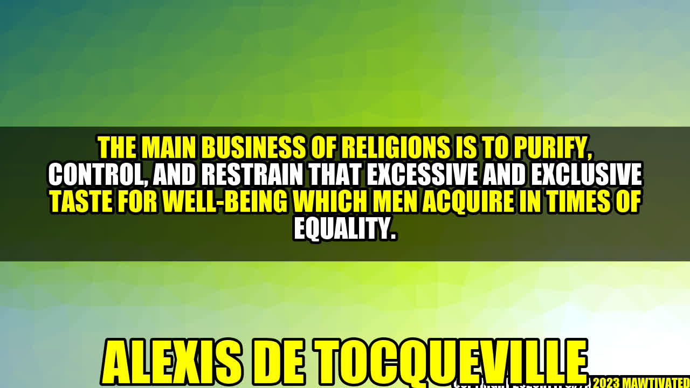

The Power of Religion in a Time of Equality

Consider the story of Maria...
"I felt lost and alone. Life was good, but I wasn't happy. I had everything, but I wanted more. That's when I turned to religion."
Maria's story may be familiar to many. She found herself struggling to find meaning in a world that seemed to offer everything except happiness. It's a common struggle in a time of equality when everyone is on the same level playing field.
The Background of Alexis de Tocqueville
Alexis de Tocqueville, a French political thinker, observed that people tend to become obsessed with material well-being in times of equality. He believed that religion was the solution to this problem, as it could help people find purpose outside of themselves.
Examples of the Main Business of Religion
- Religions promote selflessness and charity, encouraging people to think beyond themselves and their immediate desires.
- Religions provide moral guidance, outlining a set of values and behaviors that lead to a more fulfilling life.
- Religions encourage introspection and reflection, promoting a sense of inner peace and connection to something greater.
Why Religion is Still Relevant Today
At a time when many people feel lost and alone, religion continues to provide a sense of purpose and connection to something greater. While it's true that many people are turning away from organized religion, spirituality and personal belief is still a driving force in many people's lives.
The Benefits of Religion
- Religion provides a sense of purpose and direction in life.
- Religion promotes a strong moral code and ethical behavior.
- Religion can foster a sense of community and social support.
Conclusion
- Religion is still highly relevant in a time of equality.
- Religion provides a sense of purpose and direction in life.
- If you're feeling lost, consider exploring religion and spirituality to find meaning and fulfillment.
Curated by Team Akash.Mittal.Blog
Curated by Team Akash.Mittal.Blog
Share on Twitter Share on LinkedIn